はじめに
Gaussian Scan は、スキャン測定データ（位置と強度）から、ビームやエッジの幅（FWHM：半値全幅）と位置を評価する Windows 用アプリです。
- エッジ（立ち上がり）のデータを微分し、微分のピークの幅を「直接FWHM」と「Gaussianフィット」の2つの方法で求めます。
- 微分しない生データそのものも、ピーク（山・谷）またはエッジ（誤差関数のフィット）として解析できます。
- 複数のスキャンを重ね描きし、ピーク位置や幅をそろえて比較したり、解析値をスキャンごとに並べたトレンドで比べたりできます。
- 読み込んだデータと設定はセッションファイルにまとめて保存し、後で開き直せます。
動作環境と起動
- Windows 10 / 11（64ビット）。Windows 11 で動作を確認しています（Windows 10 は未検証）。
GaussianScan.exeをダブルクリックするだけで起動します。インストール、Python、インターネット接続は不要です。- 起動時にライブラリを一時フォルダへ展開するため、数秒～数十秒かかることがあります。
- 署名のない実行ファイルのため、初回は「Windows によって PC が保護されました」と表示されることがあります。「詳細情報」→「実行」を選んでください。
- 元のデータファイルは変更しません。レジストリ・PATH・既存の Python も変更しません。
まず試す
- リボン「ホーム」の［2ファイルを選択…］で、付属の
sample\pos.txtとsample\xas.txtを同時に選びます（列数から自動で振り分けます）。 - ［＋ スキャン追加］を押します。横軸1列目・縦軸4列目が初期値です。
- 右のグラフに生データと微分が表示され、一覧に FWHM（直接 約1.879、Gauss 約1.885）が出ます。
画面の構成
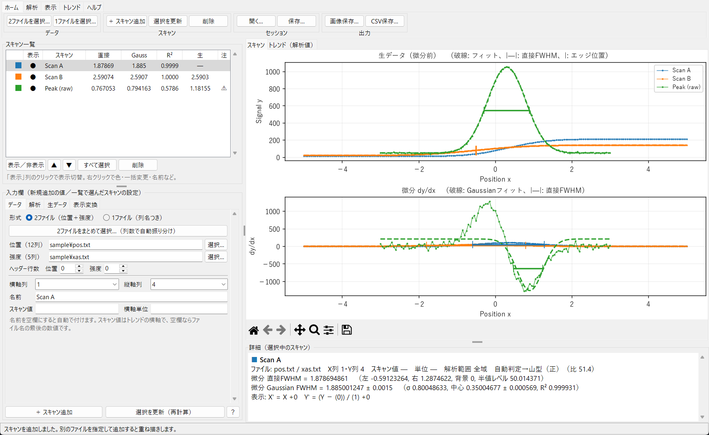
| 場所 | 内容 |
|---|---|
| 上部：メニューバー・リボン | すべての操作。リボンはタブ（ホーム／解析／表示／トレンド／ヘルプ）でボタンを切り替えます。 |
| 左上：スキャン一覧 | 登録したスキャンと結果（直接／Gauss／生 は FWHM、R²、注意）。複数選択、右クリックメニューあり。 |
| 左下：入力欄（タブ） | データ／解析／生データ／表示変換。新しく追加するスキャンの値を入力します。一覧でスキャンを選ぶと、そのスキャンの設定が入ります。 |
| 右上：グラフ | 「スキャン」タブ：生データと微分。「トレンド（解析値）」タブ：解析値の比較。グラフの下は拡大・移動・保存のツールバー。 |
| 右下：詳細 | 選択中のスキャンの解析条件と結果の詳細、注意事項。 |
左右の境界、一覧と入力欄の境界、グラフと詳細の境界はドラッグして大きさを変えられます。
リボン
| タブ | 主なボタン |
|---|---|
| ホーム | ファイル選択、スキャン追加・更新・削除、セッションを開く・保存、画像・CSV保存 |
| 解析 | 選択中のスキャンの FWHM計算・ピークの向き・生データ解析の変更、一括変更、グラフで範囲を指定・範囲を全域に、スキャン値、順番・色・名前 |
| 表示 | 表示モード（両方／生データ／微分データ）、凡例、網掛け、表示範囲、ピーク中心で比較 |
| トレンド | トレンドの表示、縦軸の解析値、誤差棒、トレンドCSV・画像 |
| ヘルプ | このマニュアルの各章、バージョン情報 |
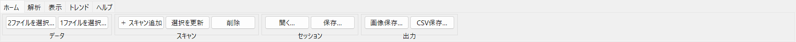
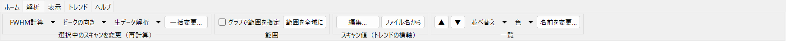
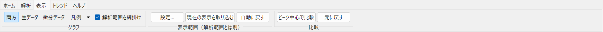
ショートカット
| キー | 操作 |
|---|---|
| F1 | マニュアル |
| Ctrl+O / Ctrl+S | セッションを開く／保存 |
| Ctrl+E | 画像保存 |
| Ctrl+B | 一括変更 |
| Ctrl+A（一覧） | すべて選択 |
| Alt+↑ / ↓（一覧） | 順番を上下に移動 |
| Delete（一覧） | 選択を削除（確認あり） |
データの読み込み
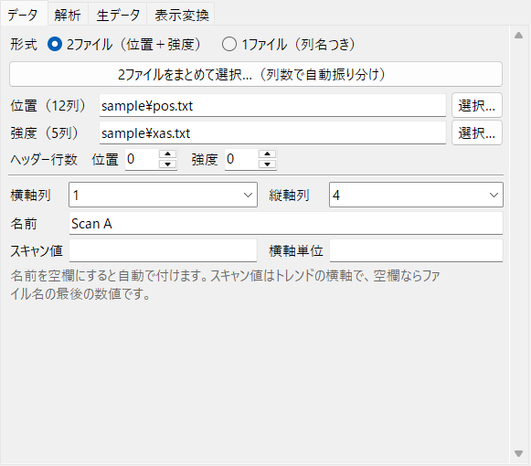
入力欄の「データ」タブで形式を選び、ファイルを指定して［＋ スキャン追加］を押します。別のファイルを指定して追加を繰り返すと、同じグラフに重ね描きします。
2ファイル形式（位置＋強度）
- 位置データ（12列）と強度データ（5列）のタブ区切りファイル。同じ行どうしを対応させます。
- ［2ファイルをまとめて選択…］で2つを同時に選ぶと、列数から位置と強度を自動で振り分けます。
- 横軸列（1～12）・縦軸列（1～5）を選びます。初期値は1列目／4列目。
- 見出し行がある場合は、各ファイルの「ヘッダー行数」を指定します。
1ファイル形式（列名つき）
- 位置と複数チャンネルが1つのファイルに入ったデータ（例：
POS1, Ch0, Ch1, …）。 - 区切り（カンマ・タブ・空白）と列名の行は自動で判定します。
#で始まる行と空行は読み飛ばします。 - 横軸列・縦軸列は列名のプルダウンで選びます。既定は、横軸が POS で始まる列（なければ1列目）、縦軸が値の変化幅の最も大きい列です。
- 別のファイルを選んでも、同じ列名があれば選んだ列を保ちます。
共通の書式・入力
- 文字コード：UTF-8（BOM可）、BOM付き UTF-16、CP932（Shift_JIS）。日本語の見出し・フォルダ名も使えます。
- 数値：指数表記 e/E と d/D に対応。列数の不一致、数値以外、NaN、無限大はエラーにします（行番号を表示）。
- 横軸は昇順でも降順でも構いません（降順のまま解析し、昇順と同じ結果になります）。
- 名前：空欄なら自動で付けます。スキャン値：トレンドの横軸に使う数値。空欄ならファイル名の最後の数値（例：
HeightScan_160→ 160）。横軸単位：グラフと詳細に表示します（単位換算はしません）。
解析（微分データ）
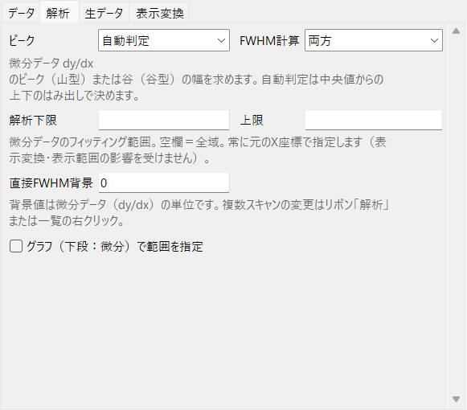
読み込んだデータ y(x) を微分し（dy/dx）、そのピークの幅を求めます。エッジのデータでは、微分したピークの FWHM がビームの幅に相当します。
| 項目 | 内容 |
|---|---|
| ピーク | 自動判定（初期値）／山型（正）／谷型（負）。自動判定は、解析範囲内の dy/dx の中央値から上へのはみ出しと下へのはみ出しの大きい方を採用します。大きい方が小さい方の2倍未満なら「判定があいまい」と注意を出します。 |
| FWHM計算 | 両方／直接のみ／Gaussianのみ／計算しない。 |
| 解析下限・上限 | 微分データのフィッティング（FWHM を求める）範囲。空欄は全域。常に元のX座標で指定します（表示変換や表示範囲の影響を受けません）。グラフから指定することもできます。 |
| 直接FWHM背景 | 直接FWHM の背景値（dy/dx の単位）。初期値0。 |
フィッティング範囲をグラフで指定する
- 一覧で対象のスキャンを選びます（複数可）。
- リボン「解析」の［グラフで範囲を指定］（または「解析」「生データ」タブの同じボタン）を押します。ボタンが押された状態の間、範囲指定モードです。
- グラフ上を左右にドラッグします。下段（微分）でドラッグすると微分の範囲、上段（生データ）でドラッグすると生データの範囲になります。
- 範囲が入力欄に入り、選択中のスキャンを読み込み済みのデータからすぐ再計算します（1件でも計算できない場合は、どのスキャンも変更しません）。
- もう一度ボタンを押すと終了します。［範囲を全域に］で、選択中のスキャンの範囲（微分・生データとも）を解除します。
表示変換で左右に動かしているスキャンでも、元のX座標に直して設定します（複数選択で表示位置が異なる場合は、先頭のスキャンの座標を使います）。範囲指定モードの間は、ツールバーの拡大・移動は使えません。指定した範囲はグラフに薄く網掛けされます（上段は生データの範囲、下段は微分の範囲）。
詳細欄には「微分 直接FWHM」「微分 Gaussian FWHM（± 近似標準誤差、σ、中心 ± 誤差、R²）」と、自動判定の結果（例：自動判定→山型（正）（比 51.4））を表示します。計算式は計算方法を参照してください。
生データの解析
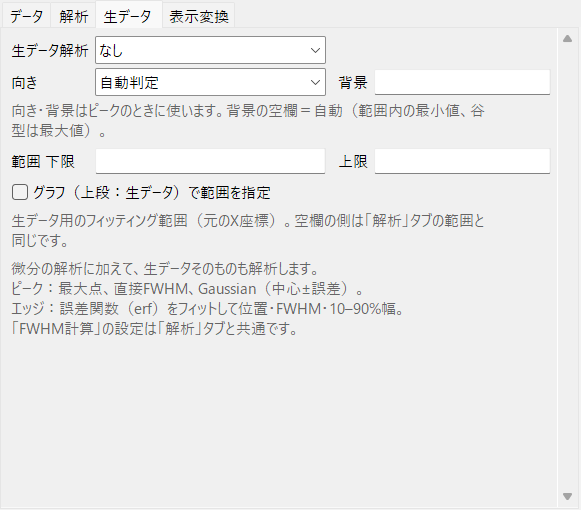
微分の解析に加えて、微分しない生データそのものも解析できます（スキャンごとにオン・オフ）。「FWHM計算」の設定は「解析」タブと共通です。
範囲 下限・上限：生データ用のフィッティング範囲（元のX座標）。空欄の側は「解析」タブの範囲と同じです（両方空欄なら微分と共通の範囲）。グラフ（上段）から指定することもできます。
| 生データ解析 | 向いているデータ | 求める値 |
|---|---|---|
| なし（初期値） | ― | ― |
| ピーク（山・谷） | 生データ自体が山・谷のデータ（ワイヤースキャン、ロッキングカーブなど） | 最大（谷型は最小）の測定点、直接FWHM、Gaussianフィット（中心 ± 誤差、FWHM） |
| エッジ（立ち上がり） | 段差のデータ（ナイフエッジ、スリットなど） | 誤差関数（erf）のフィット：エッジ位置 ± 誤差、σ、FWHM（2.3548σ）、10–90%幅（2.5631σ） |
- 向き（ピークのとき）：自動判定／山型／谷型。規則は微分と同じです。
- 背景（ピークの直接FWHM）：空欄は自動（解析範囲内の最小値、谷型は最大値）。
- エッジの FWHM は、エッジを微分した Gaussian の FWHM と同じ意味です。微分しないためノイズの影響を受けにくく、付属サンプル（真値 1.883856）では 1.88373 でした（微分の Gaussian は 1.88500）。
- エッジの立ち上がり全体（中心 ± 2σ）が範囲に入っていない場合は注意を表示します。
- 一覧の「生」列は生データの FWHM（フィットの値、なければ直接FWHM）。生データのグラフには、フィット曲線（破線）、直接FWHM（|—|）、エッジ位置（|）を描きます。
sample\synthetic_peak.datは生データのピーク解析を試すための合成データです（1ファイル形式、横軸 POS・縦軸 Peak、真値 FWHM 1.17741）。
スキャンの管理
- 選択：一覧でクリック。Ctrl／Shift+クリックで複数選択、［すべて選択］または Ctrl+A。
- 表示／非表示：「表示」列（●／○）のクリック、または［表示／非表示］。非表示のスキャンはグラフとトレンドに出ません（CSV には出ます）。
- 順番：▲▼ または Alt+↑/↓。右クリック「順番」から先頭へ・末尾へ、名前順・スキャン値順・追加した順の並べ替え。一覧の順がグラフの重ね順・凡例・トレンド（一覧の順）の順になります。
- 色：右クリック「色」（またはリボン「解析」）。任意の色、パレット11色、自動の色（番号による）。
- 名前・スキャン値：右クリック「名前を変更…」「スキャン値を編集…」。複数選択時のスキャン値は連番（開始値, 間隔）を設定できます。「スキャン値をファイル名から設定」で取り直せます。
- 削除：［削除］または Delete（確認あり）。
一括変更
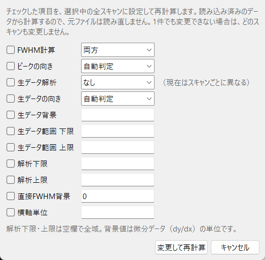
複数のスキャンを選び、リボン「解析」または右クリックで「FWHM計算」「ピークの向き」「生データ解析」を選ぶと、その場で全員に設定します。［一括変更…］（Ctrl+B）では、チェックした項目（FWHM計算、ピークの向き、生データ解析・向き・背景・範囲、解析下限・上限、直接FWHM背景、横軸単位）をまとめて設定します。
- 読み込み済みのデータから再計算するので、元のファイルがなくても使えます。
- 1件でも変更できない場合（解析範囲の誤り、位置合わせに必要な結果がなくなる場合など）は、理由を表示し、どのスキャンも変更しません。
表示
表示モード・凡例
リボン「表示」で、両方（上段に生データ、下段に微分）／生データ／微分データを切り替えます。凡例は図内／図の右外／非表示。解析範囲は、スキャンの色で薄く網掛けします（オフにできます）。微分グラフの破線は Gaussian フィット、両端に縦棒のある横線は直接FWHM です。
表示変換（入力欄「表示変換」タブ）
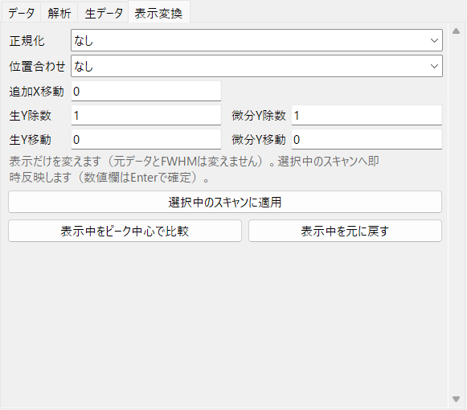
表示だけを変えます。元データと FWHM は変えません。選択中のスキャンへ即時反映します（数値欄は Enter で確定）。複数選択中は全員に同じ変換を適用します。
| 正規化 | 内容 |
|---|---|
| なし | 元の縦軸値 |
| 最大値で割る | 解析範囲内の最大値で割る（背景は引かない） |
| 任意値で割る | 「生Y除数」「微分Y除数」で割る（0 は不可、負の値は符号反転） |
| ピーク高さを1 | 背景を引き、背景からピークまでの振幅で割る。微分の背景は Gaussian の推定背景（なければ直接FWHM背景）、生データの背景は範囲内の最小値（谷型は最大値）。谷型は上向き・高さ1になります。 |
| 位置合わせ | 内容 |
|---|---|
| 微分ピーク位置 | 解析範囲内の微分の最大点（谷型は最小点）を0へ |
| Gaussian中心 | 微分の Gaussian の中心を0へ（フィット結果が必要） |
| 直接半値幅の中心 | 直接FWHM の左右交点の中点を0へ |
「追加X移動」で左右へ（正は右）、「生Y移動」「微分Y移動」で上下へ動かします。
［表示中をピーク中心で比較］は、表示中の全スキャンを中心0・背景0・ピーク高さ1にそろえ、微分グラフに切り替えます。［表示中を元に戻す］で解除します。
表示範囲
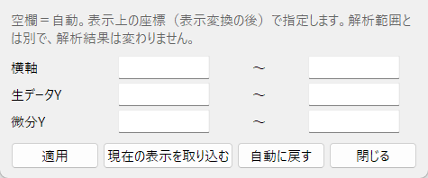
リボン「表示」の［設定…］で、横軸・生データY・微分Y の範囲を数値で指定します（空欄は自動、表示上の座標）。ツールバーで拡大・移動したあと［現在の表示を取り込む］を押すと、その範囲を数値にします。［自動に戻す］で解除。解析範囲とは別で、解析結果は変わりません。表示範囲は画像保存とセッションにも使います。
トレンド（解析値の比較）
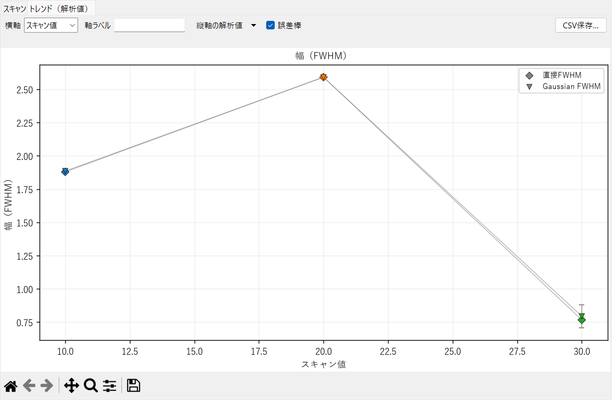
右側の「トレンド（解析値）」タブで、表示中のスキャンの解析値を縦軸、スキャンを横軸に並べます。
- 横軸：一覧の順（目盛りにスキャン名）／スキャン値（数値の順。空欄や数値でないスキャンは表示せず注意を出します）。「軸ラベル」に横軸の名前を入れます。
- 縦軸の解析値（複数選択可。種類ごとに段を分けます）：
- 位置：微分ピーク位置、Gaussian中心、直接FWHMの中心、生データ最大点の位置、生データGaussian中心、生データエッジ位置
- 幅：直接FWHM、Gaussian FWHM、生データ直接FWHM・Gaussian FWHM・erf FWHM・10–90%幅
- 微分：微分ピーク値、Gaussian振幅 生データ：最大値・最小値・変化幅、最大点の値 R²
- 誤差棒：フィットの中心・FWHM の近似標準誤差。
- 点の色はスキャンの線の色、記号は解析値の種類です。値は既存の解析結果をそのまま並べるだけで、FWHM を計算し直すことはありません。
- ［CSV保存…］で、表示中のスキャンの全解析値（と近似標準誤差
*_stderr）を保存します。
画像・CSVの保存
画像保存（Ctrl+E）
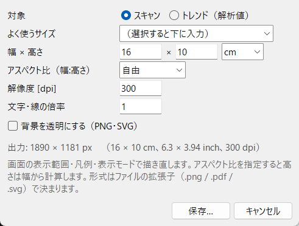
- 対象：スキャンのグラフ／トレンド。よく使うサイズ（論文 片段・全段、スライド16:9、フルHD）から選べます。
- 幅×高さ（cm／inch／px）、アスペクト比（自由・4:3・3:2・16:9・1:1・画面と同じ）、解像度（dpi）、文字・線の倍率、背景の透明化。出力される画素数を表示します。
- 形式はファイルの拡張子（.png／.pdf／.svg）で決まります。画面の表示範囲・凡例・表示モードのまま、指定した大きさで描き直して保存します（画面の見た目は変わりません）。
- 小さいサイズで凡例を図の右外に置くとグラフが狭くなります。その場合は凡例を図内にするか、文字の倍率を下げてください。
CSV保存
- 全スキャン（非表示も含む）の結果とデータを UTF-8（BOM付き、Excel で文字化けしない）で保存します。
- 先頭にスキャン別の一覧（直接FWHM、Gaussian FWHM、σ、R²、注意事項、生データの FWHM 等）。続いて各スキャンの入力設定、解析結果、データ表（x、元の y、dy/dx、フィット値、範囲フラグ、表示座標、生データのフィット値）。
- 計算していない／算出不可の値は空欄です。Gaussian のフィット値は全点に出力するため、解析範囲外では外挿値です。
- CSV は結果の記録用です。CSV をスキャンとして読み込み直す機能はありません（続きはセッションで）。
セッション
［保存…］（Ctrl+S）で、現在の全スキャンを1つのファイル（拡張子 .gscan）に保存し、［開く…］（Ctrl+O）で開き直します。
- 保存される内容：各スキャンの読み込んだ元データ（ファイル内に埋め込み）、全設定（形式、ファイル名、列、解析条件・範囲、生データ解析・範囲、表示変換、表示／非表示、色、スキャン値、名前、一覧の順）、表示モード・凡例・網掛け、表示範囲、トレンドの設定、画像保存の設定、保存時の FWHM（照合用）。
- 元データを埋め込むので、元のファイルを移動・削除しても開けます。開くときは埋め込んだデータから再計算し、保存時の FWHM と一致しなければ警告します。
- スキャンがある状態で開くと「置き換え」「追加」「キャンセル」を選べます。EXE のアイコンに
.gscanをドラッグ＆ドロップしても開けます（ファイルの関連付けはしません）。 - 保存していない変更があるとタイトルの先頭に「*」が付き、閉じるときに確認します。保存は一時ファイル経由なので、失敗しても既存のファイルは壊れません。
- 壊れたファイルや他のアプリのファイルはエラーにし、現在のスキャンは変更しません。開いただけでプログラムが実行される形式（pickle）は読み込みません。
- 新しい版で保存したセッションは、古い版では開けません（古い版のセッションは新しい版で開けます）。
計算方法
微分
実際の横軸間隔を使い、不等間隔と降順に対応します。内部は3点の中央差分、両端は2次精度の片側差分。平滑化はしません。全スキャン範囲を微分してから、解析範囲内の点を FWHM の計算に使います。重複した位置や往復スキャンなど微分できない場合は、生データだけ表示し、理由を表示します。
直接FWHM（モデルを仮定しない方法）
- 背景値 B を指定します（微分では手動、初期値0）。
- 解析範囲内の最大値（山型）または最小値（谷型）をピーク P とします。半値レベルは B + (P − B)/2。
- ピークから左右へ進み、最初に半値に達する位置を隣接点の線形補間で求めます。直接FWHM = 右交点 − 左交点。
3点以上と、範囲内に左右両方の交点が必要です。範囲外への外挿はしません。複数ピークで交点が増える場合は、最大ピークに最も近い左右の交点を使い、警告します。
Gaussian フィット
背景 B、振幅 A、中心 μ、幅 σ を重みなし最小二乗で推定します（scipy.optimize.curve_fit）。異なる位置が6点以上必要です。山型では A ≥ 0、谷型では A ≤ 0。半値位置が範囲外、不安定なフィット、R² < 0.9 などは警告します。fwhm_stderr・中心の誤差は共分散行列からの近似標準誤差で、系統誤差や微分点間の誤差相関は含みません。
参考：Igor の標準 gauss の width は √2·σ で、このアプリの σ とは異なります。
エッジ（誤差関数）フィット
A の符号で立ち上がり／立ち下がりを表します。エッジを微分すると中心 μ・幅 σ の Gaussian になるため、FWHM は微分の Gaussian の FWHM と同じ意味です。
ピークの向きの自動判定
解析範囲内のデータ（微分または生データ）の中央値 m を基準に、上へのはみ出し（最大 − m）と下へのはみ出し（m − 最小）の大きい方を採用します。比（大／小）が2未満なら「あいまい」と警告します。
よくある質問・注意
- 「左右の半値交点が解析範囲内に揃いません」と出る
- ピークの裾が範囲の外まで続いているか、背景値・ピークの向きが合っていません。解析範囲を広げる、背景値を見直す、向きを確認してください。
- 自動判定で「あいまい」と出る
- ノイズだけの列や、山と谷が同程度のデータです。グラフを見て、山型・谷型を指定してください。
- 直接FWHM と Gaussian FWHM が違う
- Gaussian はモデルから求めるため、形が Gaussian でないと一致しません。直接FWHM は測定点とノイズの影響を受けます。両方を比べて判断してください。
- 横軸単位が異なると注意が出る
- 単位の換算はしません。単位をそろえて比較してください。
- 色が足りない
- 自動の色は10色で循環します。右クリック「色」で個別に変えるか、区別できる名前を付けてください。
- BOMなしの UTF-16 ファイルが読めない
- 判別できないため、誤った値を読み込まないようエラーにしています。UTF-8 か CP932 で保存し直してください。
- 起動が遅い・警告が出る
- はじめにを参照してください。組織のセキュリティ設定で署名のない EXE が止められる場合は、管理者に相談してください。
利用条件
本ソフトウェアは無償で利用できます。改変せず、LICENSE.txt と licenses フォルダを同梱すれば再配布できます。改変・逆コンパイルは禁止です。無保証であり、利用によって生じたいかなる損害についても作者は一切の責任を負いません。詳しくは配布元の LICENSE.txt を参照してください。
EXE には Python、Tcl/Tk、NumPy、SciPy、Matplotlib などの第三者のソフトウェアが含まれ、それぞれのライセンス（licenses フォルダ）が適用されます。
このマニュアルは Gaussian Scan 2.0 に対応しています。